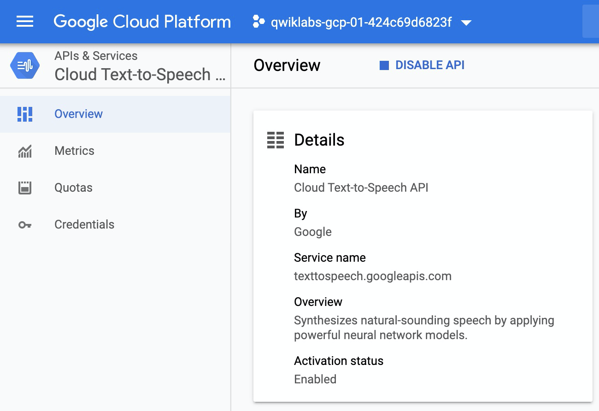
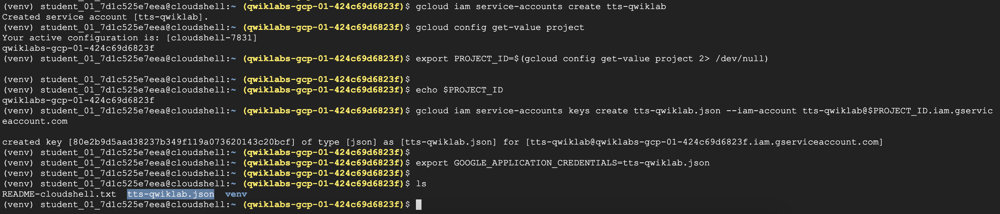
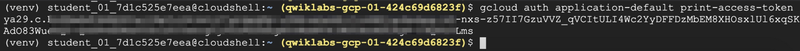
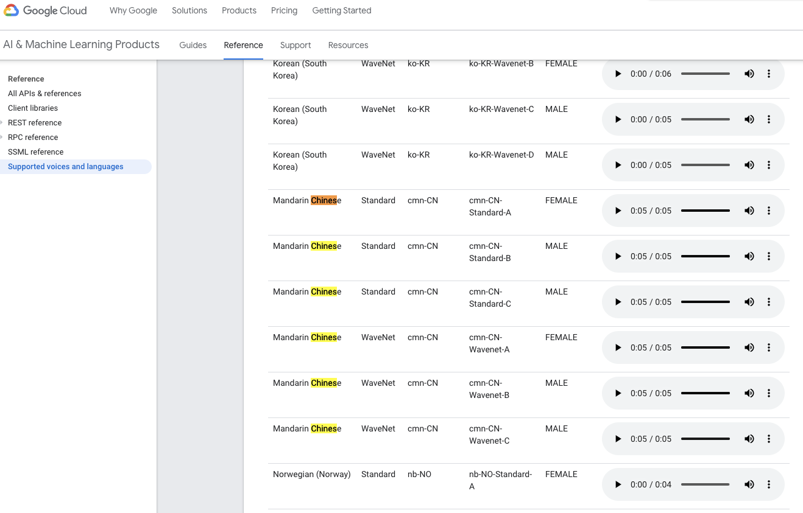
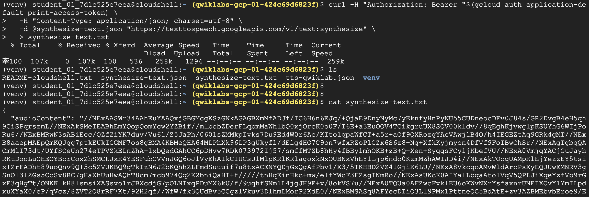
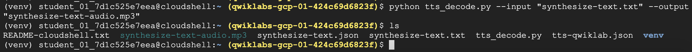
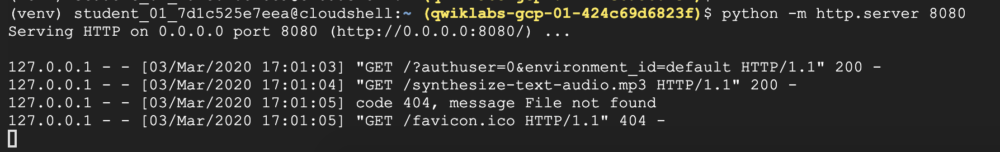
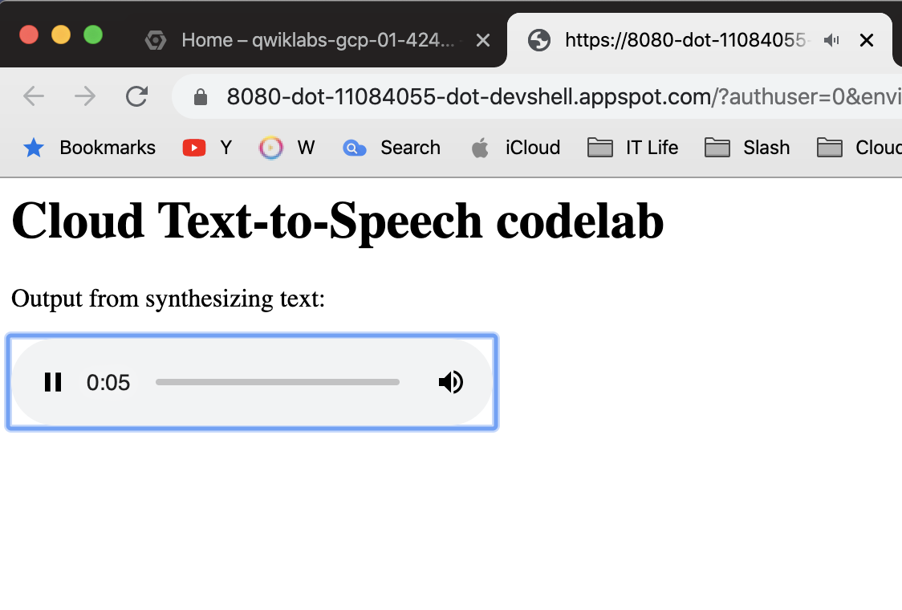

什麼是 Text-to-Speech (TTS)
俗稱的TTS，從演進來看通常會有二種，第一類傳統作法已經行之有年，就像你常聽到的google小姐的聲音，第二類是拜於深度神經網路的發達，透過Convolutional Neural Network(CNN)來合成語音，這項技術比較多是運用在圖像的辨識上面，但Google將它轉向生成語音，成效相當很驚人！
1. Basic 傳統作法
傳統上常見語音合成的方法有拼接生成又稱串接生成(Concatenative synthesis)及統計參數化法(StatisticalParametric method)等。拼接生成是透過事先錄製多段聲音來拼接合成目標語句；參數化法則是用模型生成聲音特徵的參數，再經由聲碼器合成聲音重新建構出聲音的波形。
簡單說，拼接生成最爆力的方式，直接找真人錄一大堆的句子、單字或一個字，建構起一個龐大的資料庫，然後看使用者打的是那一種單字，就從資料庫中去抓取並唸出來，重新拼接出來你要的句子，所以拼接起來會讓人覺得斷斷續續、怪怪的，因為很平淡沒有什麼抑揚頓挫(intonation)
2. WaveNet
WaveNet中文稱為(波網)是一個用於直接生成聲音訊號的[人工神經網路]。是由倫敦人工智慧公司DeepMind的研究人員於2016發表的。WaveNet強大的地方是通過使用用真實語音記錄訓練的神經網絡方法直接模擬波形，能夠生成聽起來相對真實的人類聲音。除了人類語音合成外，WaveNet也能應用在音樂生成以及語音辨識等領域。[2]
2018年，Google在其雲端語音合成服務(Google Cloud Text-to-Speech)[3]提供了基於WaveNet的語音合成API[4]。截至2019年，該產品提供了32種語言以及多種不同音色的語音合成服務，且基於WaveNet的合成結果在自然度上相比傳統方法更接近人類語音。
實作Text-to-Speech
Step1. Enable API
- 在Google Project上啟用
Text-to-Speech這隻API

Step 2. Create a service account
- 建立個服務帳戶
- 把服務帳戶輸出為JWT檔，供程式呼叫驗證：
tts-qwiklab.json
1 | gcloud iam service-accounts create tts-qwiklab |
2 | export PROJECT_ID=$(gcloud config get-value project 2> /dev/null) |
3 | gcloud iam service-accounts keys create tts-qwiklab.json --iam-account tts-qwiklab@$PROJECT_ID.iam.gserviceaccount.com |
4 | |
5 | export GOOGLE_APPLICATION_CREDENTIALS=tts-qwiklab.json |

Step 3. Create synthetic speech from text
Token準備：使用當前auth token
gcloud auth application-default print-access-token
選擇發音的語系voice source，可以參考以下
https://cloud.google.com/text-to-speech/docs/voices
再來就是最重要的部驟，需要生成一個json檔：
synthesize-text.json其中JSON-formatted 參數值如下，分成三大塊
input主要生成語音的文字內容voice生成聲音的語言、發音版本、是否使用SSMLaudioConfig聲音編碼的格式
1 | |
2 | { |
3 | 'input':{ |
4 | 'text':'Cloud Text-to-Speech API allows developers to include |
5 | natural-sounding, synthetic human speech as playable audio in |
6 | their applications. The Text-to-Speech API converts text or |
7 | Speech Synthesis Markup Language (SSML) input into audio data |
8 | like MP3 or LINEAR16 (the encoding used in WAV files).' |
9 | }, |
10 | 'voice':{ |
11 | 'languageCode':'en-gb', |
12 | 'name':'en-GB-Standard-A', |
13 | 'ssmlGender':'FEMALE' |
14 | }, |
15 | 'audioConfig':{ |
16 | 'audioEncoding':'MP3' |
17 | } |
18 | } |
Step 4. 完成curl + json
- 傳送
synthesize-text.txt檔案給Google Text-to-Speech API 生成語音檔 - 使用的API Endpoint:
https://texttospeech.googleapis.com/v1/text:synthesize
1 | curl -H "Authorization: Bearer "$(gcloud auth application-default print-access-token) \ |
2 | -H "Content-Type: application/json; charset=utf-8" \ |
3 | -d @synthesize-text.json "https://texttospeech.googleapis.com/v1/text:synthesize" \ |
4 | > synthesize-text.txt |
- 運行結果
你會發現結果會以 base64-encoded 加密的文字呈現，這個其實是語音的內容(audioContent field)，因此我們需要decode text

Step 5. 把text轉成mp3檔
- 這邊準備一隻程式tts_decode.py，可以把decode text轉換成 .mp3
- decode的函式
new_file.write(decodebytes(audio_data.encode('utf-8')))，最後再轉換成語音
1 | python tts_decode.py --input "synthesize-text.txt" --output "synthesize-text-audio.mp3" |
- 運行結果

Step 6. 驗證
- 開一個網頁來聽mp3， index.html
1 | <html> |
2 | <body> |
3 | <h1>Cloud Text-to-Speech codelab</h1> |
4 | <p> |
5 | Output from synthesizing text: |
6 | </p> |
7 | <audio controls> |
8 | <source src="synthesize-text-audio.mp3" /> |
9 | </audio> |
10 | </body> |
11 | </html> |
run web-server
python -m http.server 8080
